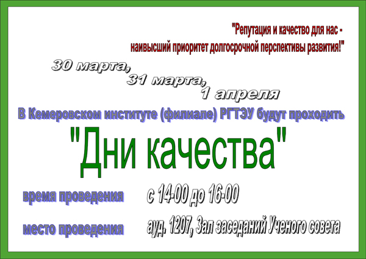
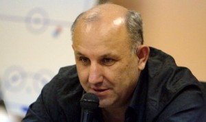

В рамках проводимых в кемеровском филиале РГТЭУ «Дней качества» поприсутствовал сегодня на первом таком дне в качестве бывшего студента и выпускника.
Вместе с Балыкиной Екатериной, начальником отдела продаж электротехнической компании «Элком», с которой мы когда-то топтали коридоры тогда института коммерции мы несколькими предложениями рассказали о жизни, которая будет потом. Ну по крайней мере какая она стала у нас.

Екатерина после вуза долго не работала. Родила двух детей, немного их вырастила, а пошла работать только в 29 лет. Что не помешало ей недавно обучиться по программе MBA (к программе я правда отношусь скептически)
Я честно сказал, что никаких полученных в вузе практических навыков в работе применить не удалось. Рассказал, что после вуза полтора года работал верстальщиком газет. Потом организовал свою, потом закрыл. Потом еще четыре. Сейчас издаются две.
Порекомендовал студентам (хотя похоже там в основном отличники и хорошисты были) с 4-5 курса заниматься не только получением знаний в стенах вуза, но и начинать трудовую деятельность.

Открывала первый день эмоциональной и интересной речью директор кемеровского цума Ирина Сельская. До меня только сегодня дошло, почему на касках хоккейной команды «Кузбасс» написано ЦУМ. Оказывается Ирина, супруга президента хоккейного клуба «Кузбасс». На двоих они (по крайней мере на конец 2009 года) владеют 93,63% акций Кемеровского цума.
У заместителя генерального директора по персоналу и социальным вопросам КОАО «Азот» Баканова Евгения я поинтересовался выпускников каких специальностей в рамках данного вуза он хотел бы видеть у себя на работе. Евгений Анатольевич сказал, что любых, но по сути специальность будет не очень важна.
Почти каждому докладчику задавал вопросы преподаватель экономической теории имени которого я не знаю. Этот преподаватель с бородой как у Карла Маркса был твёрдо, к примеру, уверен, что аутсорсинг был навязан к нам загнивающим западом «это кабала для сотрудников и отсутствие социальных гарантий». А слово культура, по его мнению, произошло от слов культ и ра (солнце), т.е. культ солнца — светлого и божественного. Напомню, это был преподаватель экономической теории, что не добавляет очков ни вузу в частности ни системе высшего образования в целом.
В остальном было хорошо видно, что векторы вуза, к счастью меняются. Руководство и педагогический состав осознают, что современное высшее образование мало отвечает требованиям рынка. Надеюсь осознают это не только на словах, но и на деле.